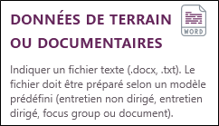

IMPORT DE DONNÉES TERRAIN OU DOCUMENTAIRES
Sphinx iQ3 permet l'import de documents textuels de différentes natures : entretiens dirigés ou non-dirigés, focus groupes, articles ou document. Ainsi, vous pouvez créer une nouvelle enquête directement à partir d'un de ces documents. Pour ce faire :
-
À partir de l’écran d’accueil, cliquez sur Créer une étude.
-
Cliquez sur Textes : Données de terrain ou documentaires.

-
Sélectionnez la méthode de collecte employée ou la nature du document importé :
 ENTRETIEN NON DIRIGÉ
ENTRETIEN NON DIRIGÉ
L’entretien (ou interview) se déroule sur le mode de la conversation.
La retranscription se fait en alternant les couples question / réponse. On utilise les balises Q : ou R : en début de ligne de chaque question ou réponse.
Plusieurs entretiens peuvent être retranscrits à la suite. On utilise la balise E : pour repérer les différents entretiens. En tête de la retranscription d’un entretien figurent les données caractérisant l’interview. Elles sont définies par des balises, par exemple : Nom, Prénom, Age, CSP, Date… Ces indications figurent en début de ligne. Le signe ":" sépare la balise de son contenu.
Des annotations peuvent être ajoutées au moment de la retranscription pour marquer des expressions non verbales ou tout autre commentaire ne faisant pas partie du texte retranscrit. Ces annotations sont portées entre crochets et sont placées avant le point de la phrase à annoter. Par exemple : "Si vous insistez [Résistance]".
EXEMPLE :
E : Entretien avec Jean Durand
Nom : Jean
Age : 31
CSP : Ouvrier
Date : 12/4/2013
Q : Comment ça va ?
R : Bien merci.
Q : Mais encore ?
R : Si vous insistez [Résistance]. Je vais vous dire que c'est super.
Q : Pouvez-vous préciser ?
R : Je parle des gens que je rencontre. Ils sont tous très intéressant. J'aime faire de nouvelles rencontres [Intérêt]. C'est toujours l'occasion d'apprendre.
E : Entretien avec Anne Blanc
Nom : Anne
Age : 50
CSP : Employé
Date : 25/6/2013
Q : Acceptez-vous de répondre ?
R : Oui bien sûr si cela ne prend pas trop de temps.
Q : Parlez-moi de ce qui compte dans votre vie.
R : Moi j'aime manger. Je ne me préoccupe pas de ma ligne. J'aime faire la cuisine et préparer mes propres plats.
Q : Quel type de cuisine préférez vous ?
R : Toutes mais surtout quand elle est préparée avec des produits frais.
E : Entretien avec Jules Martin
Nom : Jules
CSP : Employé
Age :
Date : 23/7/2013
Q : Acceptez-vous de répondre ?
R : Oui avec grand plaisir.
Q : Parlez-moi de ce qui compte dans votre vie.
R : Marcher et rêver. J’adore m’évader même en restant sur place.
Q : Vous êtes un drôle d’oiseau. Qu’est ce qui vous donne des ailes ?
R : Vous me trouvez étrange [Rire]. Mais c’est ma manière d’être !
Q : Quel type de rêves préférez vous?
R : Tous sauf les cauchemars bien sûr.Le corpus ci-dessus retranscrit 3 interviews, il comporte 10 couples questions réponses (balises Q : et R :). Les interviews sont définies par les balises Nom, Age, CSP, Date. Des annotations ont été ajoutées : [Résistance], [Intérêt] et [Rire].
Il conduit à définir des champs (ou variables) relatifs à :
-
L’identification de l’interview : Nom, Age, CSP, Date.
-
Aux 2 types de textes à analyser : Questions, Réponses.
-
Aux annotations.
Il peut être analysé selon 2 types d’unités statistiques conduisant à l’une des tables de données suivantes :
Base entretien : En colonne, 5 variables Nom, Age, CSP, Date, Question, Réponse, Annotation. En ligne, 3 entretiens, le texte de toutes les questions et de toutes les réponses de chaque interview est regroupé en dans les champs Question et Réponse. Toutes les annotations d’une même interview figurent à la suite dans le champ Annotation.
Exemple :
Base couple question-réponse : En colonne, 5 variables Nom, Age, CSP, Date, Questions, Réponses, Annotation. En ligne, 10 couples question-réponse. Les champs Question et Réponse ne contiennent que le texte relatif à chaque couple. Le champ Annotation ne contient que les annotations du couple concerné. L’identification de l’interview est reprise pour chaque couple Question, Réponse.
Exemple :
ENTRETIEN DIRIGÉ OU SEMI-DIRECTIF
L’entretien est dirigé (ou semi-directif) lorsqu’il se déroule à l’aide d’un guide ou d’un plan sans pour autant correspondre à un questionnaire. La formulation des questions et leur ordre peuvent varier en fonction de l’interlocuteur et de ses réponses. La retranscription se fait en alternant les couples question / réponse. On utilise les balises Q : ou R : en début de ligne de chaque question ou réponse.
Plusieurs entretiens peuvent être retranscrits à la suite. On utilise la balise E : pour repérer les différents entretiens. En tête de la retranscription d’un entretien figurent les données caractérisant l’interview. Elles sont définies par des balises, par exemple : Nom, Prénom, Age, CSP, Date… Ces indications figurent en début de ligne. Le signe ":" sépare la balise de son contenu.
Des annotations peuvent être ajoutées au moment de la retranscription pour marquer des expressions non verbales ou tout autre commentaire ne faisant pas partie du texte retranscrit. Ces annotations sont portées entre crochets et sont placées avant le point de la phrase à annoter. Par exemple : "Si vous insistez [Résistance]".
L’indication des différents thèmes abordés ou différentes parties de l’entretien se fait par l’ajout de repères (jalon) ">" suivi d’un mot. Par exemple >introduction, >première partie, >hobbies.
REMARQUE : Il ne doit y avoir aucun espace entre le caractère ">" et le mot.
EXEMPLE :
E : Entretien avec Jean Durand
Nom : Jean
Age : 31
CSP : Ouvrier
>Intro
Q : Comment ça va ?
R : Bien merci.
Q : Mais encore ?
R : Si vous insistez [Résistance]. Je vais vous dire que c'est super.
>Hobbies
Q : Pouvez-vous préciser ?
R : Je parle des gens que je rencontre. Ils sont tous très intéressant. J'aime faire de nouvelles rencontres [Intérêt]. C'est toujours l'occasion d'apprendre.
E : Entretien avec Anne Blanc
Nom : Anne
Age : 50
CSP : Employé
>Intro
Q : Acceptez-vous de répondre ?
R : Oui bien sûr si cela ne prend pas trop de temps.
>Hobbies
Q : Parlez-moi de ce qui compte dans votre vie.
R : Moi j'aime manger. Je ne me préoccupe pas de ma ligne. J'aime faire la cuisine et préparer mes propres plats.
Q : Quel type de cuisine préférez vous ?
R : Toutes mais surtout quand elle est préparée avec des produits frais.Dans le corpus ci-dessus, 2 entretiens sont retranscrits. Il comporte 6 couples question-réponse. Les entretiens sont définis par les balises Nom, Age, CSP, Date. Des annotations ont été ajoutées ([Résistance], [Intérêt]). Les jalons : >Intro et >Hobbies conduisent à la création d’un champ supplémentaire "Jalon" indiquant pour chaque couple de question-réponse, le point auquel il se rattache, ou pour chaque interview les thèmes abordés (le nombre et la nature des thèmes abordés dans chaque interview peut varier).
Tout comme l’entretien non directif, il conduit à définir des champs (ou variables) relatifs à :
-
L’identification de l’entretien : Nom, Age, CSP, Date.
-
Aux 2 types de textes à analyser : Question, Réponse.
-
Aux annotations.
-
Aux parties et thèmes de l’entretien.
Il peut être analysé selon 2 types d’unités statistiques conduisant à l’une des tables de données suivantes :
Base entretien : En colonne 6 variables Nom, Age, CSP, Date, Question, Réponse, Annotation, Jalon. En ligne 2 interviews, le texte de toutes les questions et de toutes les réponses de chaque interview est regroupé dans les champs "Question" et "Réponse". Toutes les annotations et jalons d’une même interview figurent à la suite dans les champs "Annotations" et "Jalon".
Exemple :
Base couple question-réponse : reprend les mêmes colonnes que la base précédente. En ligne 6 couples question-réponse. Les champs "Question", "Réponse" ne contiennent que le texte relatif à chaque couple. Le champ "Annotation" ne contient que les annotations du couple concerné. Le champ "Jalon" contient le point auquel le couple question-réponse se rattache. L’identification de l’interview est reprise pour chaque couple question-réponse.
Exemple :
FOCUS GROUP
C’est une discussion de groupe dans laquelle un animateur fait parler des participants. Il lance des sujets et laisse les participants s’exprimer. Ils interviennent librement et dialoguent entre eux…
La retranscription se fait en notant le nom de chaque intervenant suivi de ":" pour chaque prise de parole. Une prise de parole peut être retranscrite sur plusieurs lignes. À chaque changement de locuteur, un retour à la ligne pour noter son nom (suivi de ":") est obligatoire.
Des annotations saisies entre crochets dans le texte (par exemple [Rire]) permettent d’ajouter de l’information complémentaire relative aux tours de parole.
Les différentes parties de la discussion peuvent être indiquées par des repères ">" suivi du nom de la partie.
REMARQUE : Il ne doit y avoir aucun espace entre le caractère ">" et le titre de la partie.
EXEMPLE :
>Présentation
Animatrice : Nous allons aujourd’hui parler de yaourt, mais avant cela pourriez-vous vous présenter en indiquant vos préférences culinaires ?
Jeannette : J’ai un mari et 2 enfants et je suis au régime. Alors pour moi faire les courses c’est une torture. Je veux faire plaisir aux miens mais aussi éviter les tentations.
Nicole : J’ai 50 ans et je vis seule. J’aime bien manger et faire la cuisine.
Béatrice : Moi vous savez…
Animatrice : Vous êtes timide Béatrice, mettez-vous à l’aise, dites-nous ce que vous aimez.
Béatrice : Le chocolat et les pommes.
Monique : j’ai 20 ans et fais beaucoup de sport. Je surveille mon alimentation.
>Le yaourt dans l’alimentation
Animatrice : Voyons maintenant la place du yaourt dans votre alimentation. Béatrice, vous voulez bien commencer ?
Béatrice : Je suis allergique aux produits lactés et je ne mange pas de yaourt.
Jeannette : Heureusement mes enfants aiment beaucoup le yaourt. Les yaourts parfumés [Goût]. Pour moi je prends du 0%.
Nicole : j’en mange un peu, et je fais beaucoup de plat à base de yaourt. Les escargots pruneaux yaourt sont ma spécialité. C’est particulièrement onctueux.
Animatrice : D’autres personnes ont-elles des recettes originales comme Nicole ?
Béatrice : Ma mère m’a appris à faire de la tarte au flanc. Moi j’y ajoute maintenant des pommes et du chocolat et je remplace le flanc par du yaourt battu en neige.
Monique : Vous croyez ? Moi les yaourts je les fais cuire.
>Les critères d’achat
Animatrice : Comment choisissez-vous vos yaourts et où l’achetez vous ?
Nicole : Je préfère les pots en verre, je les récupère pour mes confitures [Conditionnement]. Je fais beaucoup de confitures pour parfumer les yaourts nature que j’achète à Carrefour.
Jeannette : Je prends toujours ce qui est en promo, les packs de 12 cela me fait la semaine [Economie]. J’aime aussi essayer les nouveautés bio ou taille fine.
Béatrice : j’aime bien les couleurs surtout le violet, alors j’achète des yaourts violet.
Animatrice : Merci beaucoup.Dans ce focus groupe il y a 5 interlocuteurs dont une animatrice : Animatrice et 4 participantes : Jeannette, Nicole, Béatrice et Monique. Des repères indiquent les différentes parties de la discussion et des annotations ([Goût],[Conditionnement],[Economie]) ont été ajoutées au moment de la transcription.
Ce corpus peut s’analyser de 2 manières différentes :
L’unité statistique est la prise de parole. On construit une table contenant 19 lignes correspondant à chacune des 19 interventions. En colonne un champ "locuteur" indique qui parle, et un champ "texte" contient le texte du tour de parole. Un troisième champ "Jalon" contient la partie correspondant au tour de parole (uniquement si des jalons, repérés par ">" ont été ajoutés). Un dernier champ contient les annotations éventuellement ajoutées au tour de parole.
Exemple :
L’unité statistique est le locuteur. On construit une table contenant 5 lignes (une par locuteur). Il y a 4 colonnes contenant le nom de l’intervenant (champ "locuteur"), le texte regroupé des tours de parole de l’intervenant (champ "texte"), les parties de l’entretien dans lesquelles le participant est intervenu (champ "Jalon") et enfin les annotations regroupées (champ "Annotations").
Exemple :
DOCUMENTS
Articles, rapports… de nombreux documents numérisés sont disponibles sur le web ou sous forme de fichiers informatiques.
Ils peuvent être analysés comme textes indifférenciés ou en distinguant les éléments qui les constituent : résumé, développement, bibliographie, titres. Il convient pour cela de recopier les documents en les mettant bout à bout et en indiquant le nom de chaque document, ses caractéristiques et le cas échéant les éléments qui le composent complétés par d’éventuelles annotations.
On utilise des balises pour définir le document (Titre, Auteur) et les éléments qui le composent (Résumé, Mots clés, Corps, Références). Une balise est séparée de son contenu par le signe ":", par exemple : "Mots clés : chasse, Dahut". Les annotations portées entre crochets permettent de qualifier des fragments de texte en fonction de leur statut ou de leur contenu. C’est ainsi qu’on peut isoler et qualifier les fragments à citer.
REMARQUE : Chaque document doit commencer par la même balise.
EXEMPLE :
Article : La chasse au Dahut
Auteur : Pierre et Paul
Résumé : Il était une fois dans les alpages.
Mots clés : Chasse, Dahut
Corps :
Introduction [Titre]
Le Dahut est un animal étrange. Il se nourrit d’herbes poussant drues sur les pentes à forte déclivité.
C’est aussi un mythe vivace en altitude.
Le cadre montagnard [Titre]
La géographie [Sous Titre]. Les montagnes, les ravins les ruisseaux sont l’habitat du Dahut. Alpes, Pyrénées, Karpatte au-dessus de 2000 mètre. Dans les zones non habitées le plus souvent.
La société [Sous Titre]. Les gens du pays sont des montagnards robustes mais petits. Ils habitent dans des cavernes, les plus riches ont construit des chalets. Depuis quelques années le tourisme a modifié la sociologie de la région ce qui aide beaucoup à la prolifération de l’espèce.
L’animal [Titre].
4 pattes, 6 têtes et déséquilibré. Mange de la luzerne et du trèfle. Le pelage est assez dense : poils blonds qui tombent jusqu’aux pattes. Les mâles plus robustes sont également assez stupides, les femelles servent d’appât et dansent sur les cimes enneigées.
Références :
Jacques Steinli et Yvette Hornaire : Mœurs et faune des alpes. Geneviève, Edition1987
Antoine Dupond : Morphopsychologie et déséquilibres moteur. Artus, Edition 2002
Article : La vie des angles
Auteur : Jeanne Biche
Résumé : Le rendez vous de la géométrie.
Mots clé : rond, carré
Corps :
La géométrie [Titre]
Les formes géométriques ont des angles durs à la différence des informelles rondeurs des natures gazeuses. Leur étude remonte à l’âge des curiosités précieuses consignées dans un sabir abscons. Vive ou morte la géométrie est à prendre ou à laisser. Elle s’impose au géomètre collectionneur. Qu’il soit contemplatif ou mesureur il en révèle les degrés.
Les formes non géométriques ont des angles mous et vaporeux.
Le triangle [Titre]
D’or ou des Bermudes en première approximation, tripode tripier ou tripoteur, le triangle conflue significativement sans angle mort. Franc maçon et sainte trinité il se décline en étoile plus fréquemment qu’en étole. L’école lui donne sa magnificence en lui enlevant son mystère.
Le carré [Titre]
Un cercle avec des coins, tel nous apparaît le carré dans sa majesté. Triangle à 4 côté il dérive du cercle comme l’homme descend du singe.
Le carré Hermès constitue une exception notable défi improbable à la géométrie.
Références :
Serge Cosinus : La poésie des angles. Dufil, Edition 2005
Antoine Dupond : Retour à la raison. Paradigme, Edition 2001Ce corpus est formé de 2 articles composés de 4 champs texte : Résumé, Mots clé, Corps et Référence.
Les balises Article et Auteur définissent les champs (variables) qui donnent les caractéristiques des documents étudiés. Les balises Résumé, Mots clé, Corps, Références définissent les champs texte contenant les textes de chaque article. Les annotations [Titre] et [Sous Titre] qualifient le statut ou le contenu des fragments qui les contiennent.
Ce corpus peut s’analyser de 2 manières différentes :
L’unité statistique est le document. On construit une table contenant 2 lignes correspondant à chacun des 2 articles étudiés. En colonnes 7 champs (variables) : "Article" et "Auteur" définissent les textes étudiés, "Résumé", "Mots clé", "Corps", "Références" donnent les contenus correspondants pour chaque article, Annotation regroupe les annotations présentes dans chacun des articles.
Exemple :
L’unité statistique est la phrase du champ "Corps". Le texte du corps de chaque article est découpé en phrase. Le tableau résultant contient alors autant de lignes qu’il y a de phrases dans le corps des articles. Les colonnes sont inchangées.
Exemple :
-
-
Sélectionnez les balises, les jalons et annotations à utiliser.
-
Cliquez sur Suivant.
-
Sélectionnez le document à importer.
-
Cliquez sur Suivant.
-
Sélectionnez la base que vous souhaitez utiliser :
-
Couple réponses ou Entretien pour les entretiens dirigé et non dirigé.
-
Prise de parole ou Locuteur pour le focus group.
-
Phrase du corps ou Document pour les documents.
Pour plus d'informations sur la base à utiliser, veuillez consulter la partie correspondante à l'étape 3.
-
-
Sélectionnez la langue de l'étude,
-
Cliquez sur Terminer.